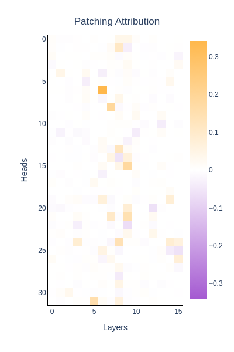
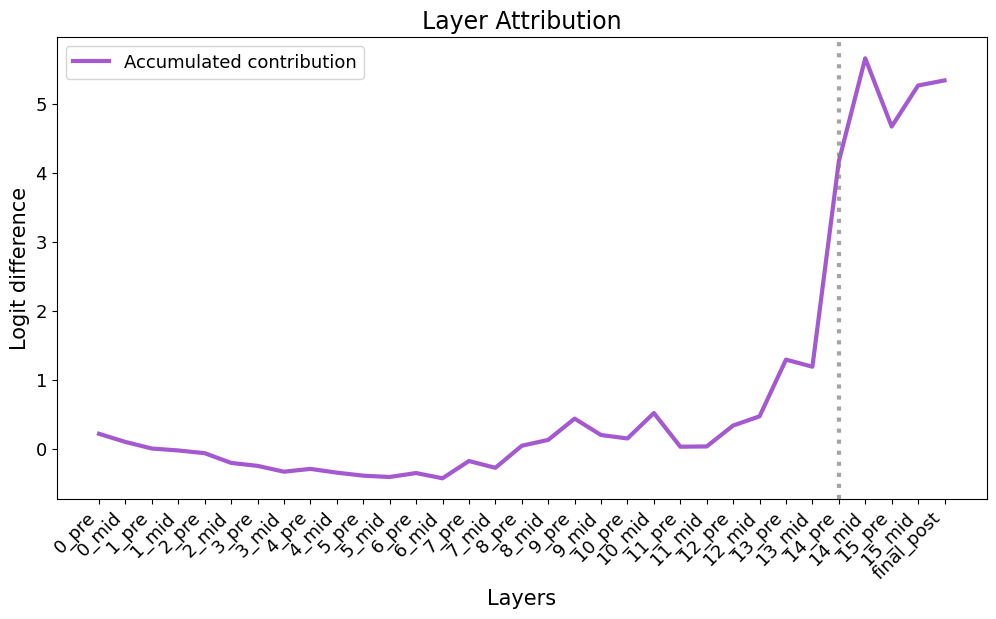
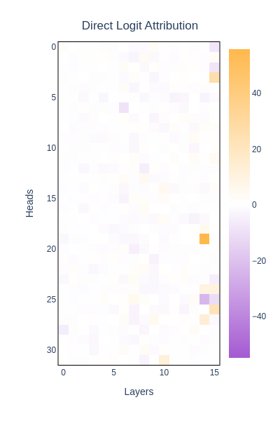

Code
from ssr.lens import Lens
lens = Lens.from_preset("llama3.2_1b")Loaded pretrained model meta-llama/Llama-3.2-1B-Instruct into HookedTransformerThis notebook illustrate the following techniques:
Requirements:
models.toml if you want to use the Lens.from_config methodLoaded pretrained model meta-llama/Llama-3.2-1B-Instruct into HookedTransformerimport transformer_lens as tl
from accelerate.utils.memory import release_memory
import torch as t
from rich import print
from jaxtyping import Float
from functools import partial
import numpy as np
import matplotlib.pyplot as plt
import tqdm
import einops
from ssr import VIOLET
from ssr.files import load_dataset
from ssr.types import HookList
from reproduce_experiments.plot import imshowmod dataset, and compute the logit difference: “Here” - “I”To compute the difference of contribution of each component’s output to the final prediction between harmful and harmless sentences, we:
here_masklogit_diff_directionneg_idx = int(lens.model.to_single_token("I"))
pos_idx = int(lens.model.to_single_token("Here"))
logit_diff_directions = lens.model.tokens_to_residual_directions(
neg_idx
) - lens.model.tokens_to_residual_directions(pos_idx)
n_heads = lens.model.cfg.n_heads
n_layers = lens.model.cfg.n_layers
lens.tokenizer.padding_side = "left"
hf_raw, hl_raw = load_dataset("mod")
hf, hl = lens.process_dataset(hf_raw, hl_raw)
# Create the `here_mask`:
with t.no_grad():
logits_cuda = lens.model.forward(hl, return_type="logits", prepend_bos=False)
logits_ = logits_cuda.cpu()
logits_cuda = release_memory(logits_cuda)
here_mask = logits_[:, -1].argmax(-1) == pos_idx
here_idx = here_mask.long().nonzero().squeeze(-1)
hf_logits, hf_cache = lens.auto_scan(hf[here_idx], pattern=None)
hl_logits, hl_cache = lens.auto_scan(hl[here_idx], pattern=None)100%|██████████| 1/1 [00:01<00:00, 1.03s/it]
100%|██████████| 1/1 [00:01<00:00, 1.01s/it]The refusal metric is defined such that:
The forward pass are batched. Each forward pass is performed on a batch of size n_heads, so at each iteration, a whole layer is tested.
Hence in the following line:
→ the first ‘head’ correspond to the batch_idx
→ the second ‘head’ correspond to the head_idx
def batch_hook_fn(
activations, hook, patch_activations: Float[t.Tensor, "seq_len n_heads d_heads"]
):
for head in range(n_heads):
activations[head, :, head, :] = patch_activations[:, head, :]
return activations
full_scores_list = []
with t.no_grad():
for i in tqdm.tqdm(here_idx[:10]):
prompts = [lens.apply_chat_template(p) for p in [hf_raw[i], hl_raw[i]]]
tokens = lens.tokenizer(
prompts, padding=True, add_special_tokens=False, return_tensors="pt"
).input_ids
logits, cache = lens.auto_scan(tokens, pattern="z")
hook_z = cache.stack_activation("z")
init_logits_diff = (
(logits[:, -1, neg_idx] - logits[:, -1, pos_idx])
.unsqueeze(-1)
.repeat(1, n_heads)
)
scores_list = []
for layer in range(n_layers):
fwd_hooks: HookList = [
(
tl.utils.get_act_name("z", layer=layer),
partial(batch_hook_fn, patch_activations=hook_z[layer, 0]),
)
]
with lens.model.hooks(fwd_hooks=fwd_hooks) as hooked_model:
logits = hooked_model.forward(
tokens[1].unsqueeze(0).repeat(n_heads, 1), return_type="logits"
)
scores_list.append(refusal_metric(logits.cpu(), init_logits_diff))
logits = release_memory(logits)
full_scores_list.append(t.vstack(scores_list))
imshow(
t.cat([x.unsqueeze(0) for x in full_scores_list], dim=0).mean(dim=0).T,
xaxis_title="Layers",
yaxis_title="Heads",
title=f"Patching Attribution",
size=(600, 400),
border=True,
)100%|██████████| 1/1 [00:00<00:00, 7.09it/s]
100%|██████████| 1/1 [00:00<00:00, 7.43it/s]]
100%|██████████| 1/1 [00:00<00:00, 7.22it/s]]
100%|██████████| 1/1 [00:00<00:00, 7.23it/s]]
100%|██████████| 1/1 [00:00<00:00, 7.61it/s]]
100%|██████████| 1/1 [00:00<00:00, 7.00it/s]]
100%|██████████| 1/1 [00:00<00:00, 7.58it/s]]
100%|██████████| 1/1 [00:00<00:00, 7.71it/s]]
100%|██████████| 1/1 [00:00<00:00, 7.56it/s]]
100%|██████████| 1/1 [00:00<00:00, 7.65it/s]]
100%|██████████| 10/10 [00:38<00:00, 3.82s/it]Unable to display output for mime type(s): application/vnd.plotly.v1+json
This part’s code is borrowed in large part from the ARENA course: https://arena-chapter1-transformer-interp.streamlit.app/[1.4.1]_Indirect_Object_Identification.
In our case, the “correct” answer is the refusal (“I”), and the incorrect answer is the acceptance (“Here”).
hf_logit_diffs = hf_logits[:, -1, neg_idx] - hf_logits[:, -1, pos_idx]
hf_final = hf_cache["resid_post", -1][:, -1, :]
hl_final = hl_cache["resid_post", -1][:, -1, :]
hf_final_scaled = hf_cache.apply_ln_to_stack(hf_final, layer=-1, pos_slice=-1)
hl_final_scaled = hl_cache.apply_ln_to_stack(hl_final, layer=-1, pos_slice=-1)
def residual_stack_to_logit_diff(
residual_stack: Float[t.Tensor, "... batch d_model"],
cache: tl.ActivationCache,
logit_diff_directions: Float[t.Tensor, "d_model"] = logit_diff_directions,
) -> Float[t.Tensor, "..."]:
"""
Gets the avg logit difference between the correct and incorrect answer for a given stack of components in the
residual stream.
"""
batch_size = residual_stack.size(-2)
scaled_residual_stack = cache.apply_ln_to_stack(
residual_stack, layer=-1, pos_slice=-1
)
return (
einops.einsum(
scaled_residual_stack.cuda().half(),
logit_diff_directions.unsqueeze(0).repeat(batch_size, 1),
"... batch d_model, batch d_model -> ...",
)
/ batch_size
)
accumulated_residual, labels = hf_cache.accumulated_resid(
layer=-1, incl_mid=True, pos_slice=-1, return_labels=True
)
logit_lens_logit_diffs: Float[t.Tensor, "component"] = residual_stack_to_logit_diff(
accumulated_residual, hf_cache
)plt.rcParams.update(
{
"font.size": 15,
"axes.titlesize": 17,
"axes.labelsize": 15,
"xtick.labelsize": 13,
"ytick.labelsize": 13,
"legend.fontsize": 13,
"figure.titlesize": 18,
"lines.linewidth": 3,
}
)
support = np.arange(logit_lens_logit_diffs.shape[0]) / 2
plt.figure(figsize=(12, 6))
fig, ax = plt.subplots(figsize=(12, 6))
plt.plot(
support,
logit_lens_logit_diffs.detach().cpu().numpy(),
color=VIOLET,
label="Accumulated contribution",
)
intervention_layers = [14]
for layer in intervention_layers:
plt.axvline(x=layer, color="gray", linestyle=":", alpha=0.7)
plt.xlabel("Layers")
plt.xticks(support, labels, rotation=45, ha="right") # type: ignore
plt.ylabel("Logit difference")
plt.title("Layer Attribution")
plt.legend()
fig.patch.set_alpha(0)
ax.set_facecolor("none")
plt.show()<Figure size 1200x600 with 0 Axes>
Instead of computing the contribution of each layer, we can take the contribution to each individual head and verify that the result coincide.
The next part relies heavily on the Transformer Lens library, that has utilities for this.
scores = t.zeros(n_layers, n_heads)
with t.no_grad():
for i in range(len(hf[here_idx])):
_, hf_smal_cache = lens.auto_scan(hf[here_idx][0], pattern=None)
hf_smal_cache = hf_smal_cache.to("cuda")
per_head_residual, labels = hf_smal_cache.stack_head_results(
layer=-1, pos_slice=-1, return_labels=True
)
per_head_residual = einops.rearrange(
per_head_residual,
"(layer head) ... -> layer head ...",
layer=lens.model.cfg.n_layers,
)
per_head_logit_diffs = residual_stack_to_logit_diff(
per_head_residual, hf_smal_cache
)
scores += per_head_logit_diffs.cpu()
per_head_logit_diffs, per_head_residual, hf_smal_cache = release_memory(
per_head_logit_diffs, per_head_residual, hf_smal_cache
)
imshow(
scores.T,
color_continuous_midpoint=0.5,
xaxis_title="Layers",
yaxis_title="Heads",
title=f"Direct Logit Attribution",
size=(600, 400),
border=True,
)100%|██████████| 1/1 [00:00<00:00, 6.05it/s]Tried to stack head results when they weren't cached. Computing head results now100%|██████████| 1/1 [00:00<00:00, 6.13it/s]Tried to stack head results when they weren't cached. Computing head results now100%|██████████| 1/1 [00:00<00:00, 6.43it/s]Tried to stack head results when they weren't cached. Computing head results now100%|██████████| 1/1 [00:00<00:00, 6.33it/s]Tried to stack head results when they weren't cached. Computing head results now100%|██████████| 1/1 [00:00<00:00, 6.34it/s]Tried to stack head results when they weren't cached. Computing head results now100%|██████████| 1/1 [00:00<00:00, 6.23it/s]Tried to stack head results when they weren't cached. Computing head results now100%|██████████| 1/1 [00:00<00:00, 6.19it/s]Tried to stack head results when they weren't cached. Computing head results now100%|██████████| 1/1 [00:00<00:00, 6.11it/s]Tried to stack head results when they weren't cached. Computing head results now100%|██████████| 1/1 [00:00<00:00, 6.35it/s]Tried to stack head results when they weren't cached. Computing head results now100%|██████████| 1/1 [00:00<00:00, 6.32it/s]Tried to stack head results when they weren't cached. Computing head results now100%|██████████| 1/1 [00:00<00:00, 6.34it/s]Tried to stack head results when they weren't cached. Computing head results now100%|██████████| 1/1 [00:00<00:00, 6.00it/s]Tried to stack head results when they weren't cached. Computing head results now100%|██████████| 1/1 [00:00<00:00, 6.27it/s]Tried to stack head results when they weren't cached. Computing head results now100%|██████████| 1/1 [00:00<00:00, 6.05it/s]Tried to stack head results when they weren't cached. Computing head results now100%|██████████| 1/1 [00:00<00:00, 6.23it/s]Tried to stack head results when they weren't cached. Computing head results now100%|██████████| 1/1 [00:00<00:00, 5.97it/s]Tried to stack head results when they weren't cached. Computing head results now100%|██████████| 1/1 [00:00<00:00, 5.90it/s]Tried to stack head results when they weren't cached. Computing head results now100%|██████████| 1/1 [00:00<00:00, 6.15it/s]Tried to stack head results when they weren't cached. Computing head results now100%|██████████| 1/1 [00:00<00:00, 6.20it/s]Tried to stack head results when they weren't cached. Computing head results now100%|██████████| 1/1 [00:00<00:00, 6.23it/s]Tried to stack head results when they weren't cached. Computing head results now100%|██████████| 1/1 [00:00<00:00, 6.15it/s]Tried to stack head results when they weren't cached. Computing head results now100%|██████████| 1/1 [00:00<00:00, 6.24it/s]Tried to stack head results when they weren't cached. Computing head results now100%|██████████| 1/1 [00:00<00:00, 6.07it/s]Tried to stack head results when they weren't cached. Computing head results now100%|██████████| 1/1 [00:00<00:00, 5.83it/s]Tried to stack head results when they weren't cached. Computing head results now100%|██████████| 1/1 [00:00<00:00, 5.34it/s]Tried to stack head results when they weren't cached. Computing head results now100%|██████████| 1/1 [00:00<00:00, 5.20it/s]Tried to stack head results when they weren't cached. Computing head results now100%|██████████| 1/1 [00:00<00:00, 5.79it/s]Tried to stack head results when they weren't cached. Computing head results now100%|██████████| 1/1 [00:00<00:00, 5.84it/s]Tried to stack head results when they weren't cached. Computing head results now100%|██████████| 1/1 [00:00<00:00, 5.47it/s]Tried to stack head results when they weren't cached. Computing head results now100%|██████████| 1/1 [00:00<00:00, 5.81it/s]Tried to stack head results when they weren't cached. Computing head results now100%|██████████| 1/1 [00:00<00:00, 5.91it/s]Tried to stack head results when they weren't cached. Computing head results now100%|██████████| 1/1 [00:00<00:00, 5.45it/s]Tried to stack head results when they weren't cached. Computing head results now100%|██████████| 1/1 [00:00<00:00, 5.88it/s]Tried to stack head results when they weren't cached. Computing head results now100%|██████████| 1/1 [00:00<00:00, 5.88it/s]Tried to stack head results when they weren't cached. Computing head results now100%|██████████| 1/1 [00:00<00:00, 5.95it/s]Tried to stack head results when they weren't cached. Computing head results now100%|██████████| 1/1 [00:00<00:00, 5.52it/s]Tried to stack head results when they weren't cached. Computing head results now100%|██████████| 1/1 [00:00<00:00, 5.44it/s]Tried to stack head results when they weren't cached. Computing head results now100%|██████████| 1/1 [00:00<00:00, 5.77it/s]Tried to stack head results when they weren't cached. Computing head results now100%|██████████| 1/1 [00:00<00:00, 5.78it/s]Tried to stack head results when they weren't cached. Computing head results now100%|██████████| 1/1 [00:00<00:00, 5.81it/s]Tried to stack head results when they weren't cached. Computing head results now100%|██████████| 1/1 [00:00<00:00, 5.82it/s]Tried to stack head results when they weren't cached. Computing head results now100%|██████████| 1/1 [00:00<00:00, 5.77it/s]Tried to stack head results when they weren't cached. Computing head results now100%|██████████| 1/1 [00:00<00:00, 5.77it/s]Tried to stack head results when they weren't cached. Computing head results now100%|██████████| 1/1 [00:00<00:00, 5.78it/s]Tried to stack head results when they weren't cached. Computing head results now100%|██████████| 1/1 [00:00<00:00, 5.67it/s]Tried to stack head results when they weren't cached. Computing head results now100%|██████████| 1/1 [00:00<00:00, 5.32it/s]Tried to stack head results when they weren't cached. Computing head results now100%|██████████| 1/1 [00:00<00:00, 5.90it/s]Tried to stack head results when they weren't cached. Computing head results now100%|██████████| 1/1 [00:00<00:00, 6.18it/s]Tried to stack head results when they weren't cached. Computing head results now100%|██████████| 1/1 [00:00<00:00, 6.26it/s]Tried to stack head results when they weren't cached. Computing head results now100%|██████████| 1/1 [00:00<00:00, 6.27it/s]Tried to stack head results when they weren't cached. Computing head results now100%|██████████| 1/1 [00:00<00:00, 6.30it/s]Tried to stack head results when they weren't cached. Computing head results nowUnable to display output for mime type(s): application/vnd.plotly.v1+json